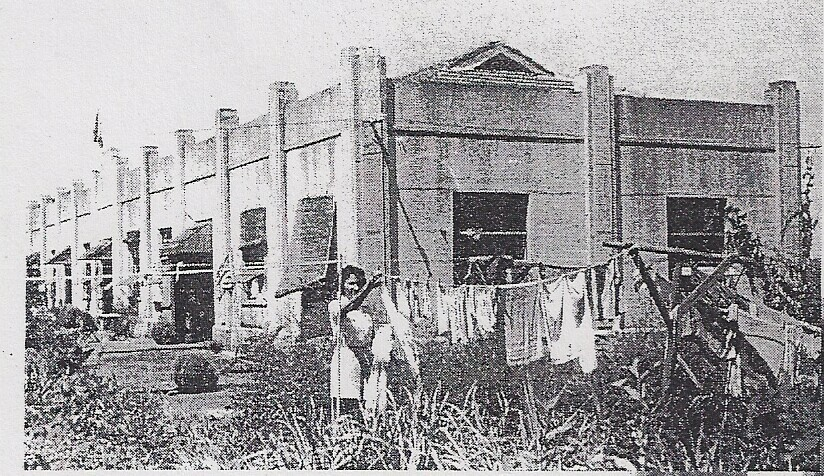
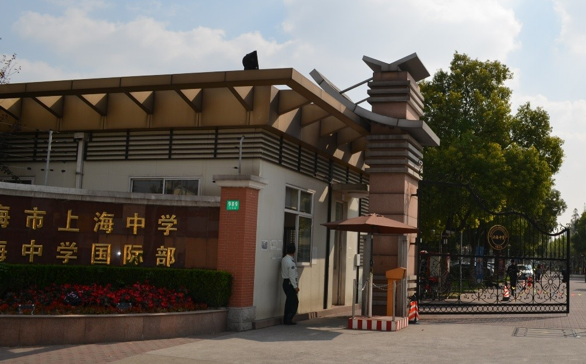

You are standing at the Main Gate of the School. Please sign in with
the guard if you have permission to enter. During the camp period a
main water tower stood to your left facing west and across Baise Rd. in
the parking lot were two buildings H and J Blocks, which served as
machine shops.

989
Baise Road, main gate of Shanghai Middle School/Shanghai High School
International Division. During the C.A.C. period the gate of the school
was on (today) 400 Shanzhong Rd. approximately 1 km .2 straight ahead.

Here
is a detail from a water color, done by an Irish internee
__________________ showing the gate area as would have appeared looking
back after walking up to the corner of the former athletic field
between former D Block (today the Finance and Admissions office and
Clinic and the Assembly Centre (the Main auditorium)